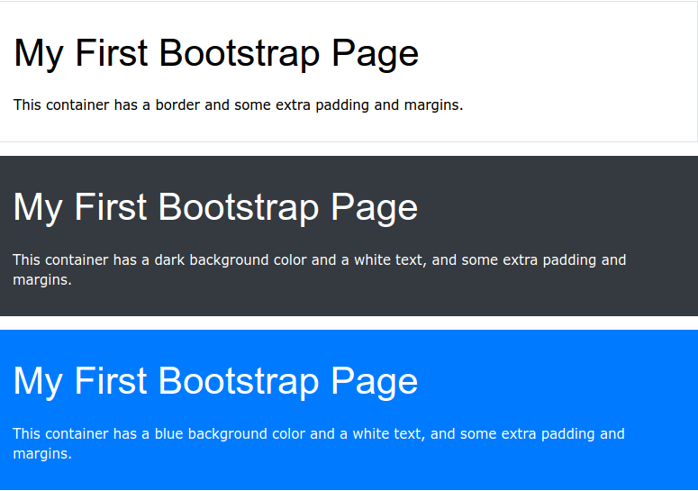

Bootstrap 4 Containers
Containers
You learned from the previous chapter that Bootstrap requires a containing element to wrap site contents. Containers are used to pad the content inside of them, and there are two container classes available:
- The .container class provides a responsive fixed width container
- The .container-fluid class provides a full width container, spanning the entire width of the viewport
Fixed Container
Use the .container class to create a responsive, fixed-width container.
Note that its width (max-width) will change on different screen sizes:
| "Extra small (lower than 576px)" | Small ≥576px | Medium ≥768px | Large ≥992px | Extra large ≥1200px | |
| max-width | 100% | 540px | 720px | 960px | 1140px |
Open the example below and resize the browser window to see that the container width will change at different breakpoints:
Example:
< div class="container">
< h1>My First Bootstrap Page< /h1>
< p>This is some text.< /p>
< /div>
Fluid Container
Use the .container-fluid class to create a full width container, that will always span the entire width of the screen (width is always 100%):
Example:
< div class="container-fluid">
< h1>My First Bootstrap Page< /h1>
< p>This is some text.< /p>
< /div>
Container Padding
By default, containers have 15px left and right padding, with no top or bottom padding. Therefore, we often use spacing utilities, such as extra padding and margins to make them look even better. For example, .pt-3 means "add a top padding of 16px":
Example:
< div class="container pt-3">< /div>
Container Border and Color
Other utilities, such as borders and colors, are also often used together with containers:
Example:
< div class="container p-3 my-3 border"> < /div>
< div class="container p-3 my-3 bg-dark text-white"> < /div>
< div class="container p-3 my-3 bg-primary text-white"> < /div>
Responsive Containers
You can also use the .container-sm|md|lg|xl classes to create responsive containers.
The max-width of the container will change on different screen sizes/viewports:
| Class | Extra small (lower than 576px) | Small ≥576px | Medium ≥768px | Large ≥992px | Extra large ≥1200px |
| .container-sm | 100% | 540px | 720px | 960px | 1140px |
| .container-md | 100% | 100% | 720px | 960px | 1140px |
| .container-lg | 100% | 100% | 100% | 960px | 1140px |
| .container-xl | 100% | 100% | 100% | 100% | 1140px |
Example:
< div class="container-sm">.container-sm< /div>
< div class="container-md">.container-md< /div>
< div class="container-lg">.container-lg< /div>
< div class="container-xl">.container-xl< /div>
Tutoriales recomendados: